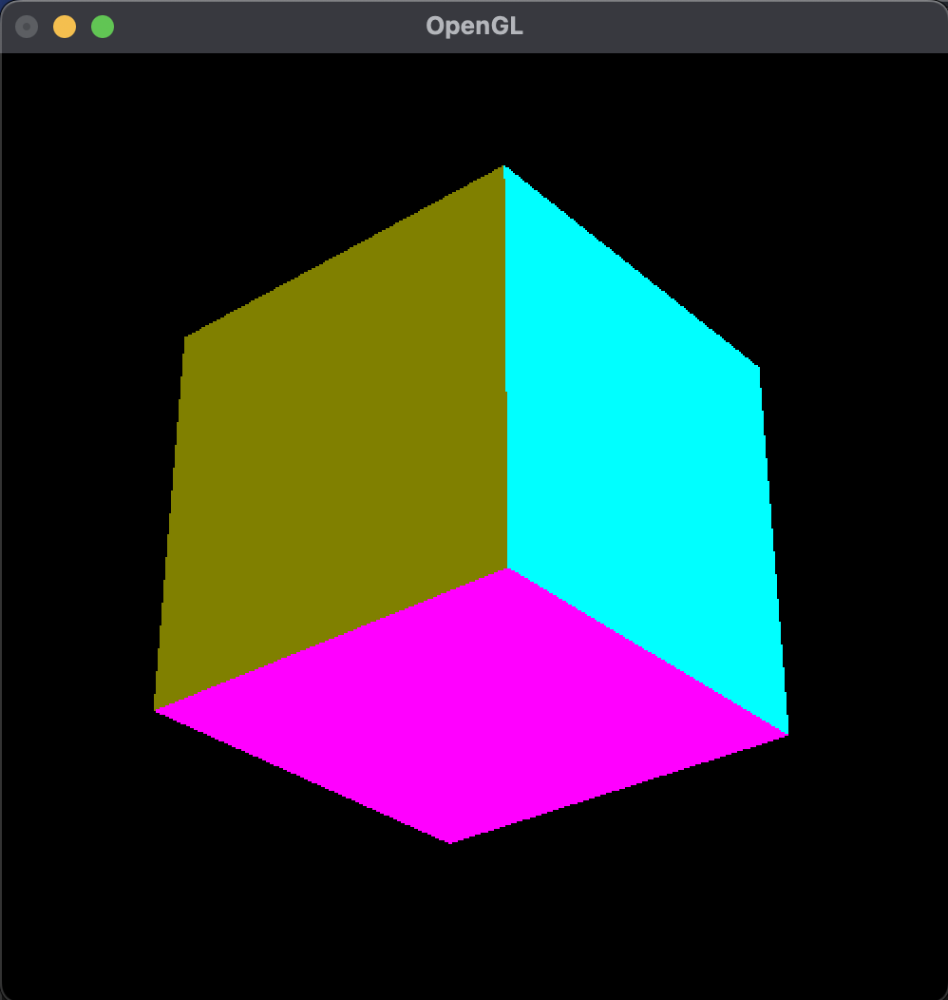
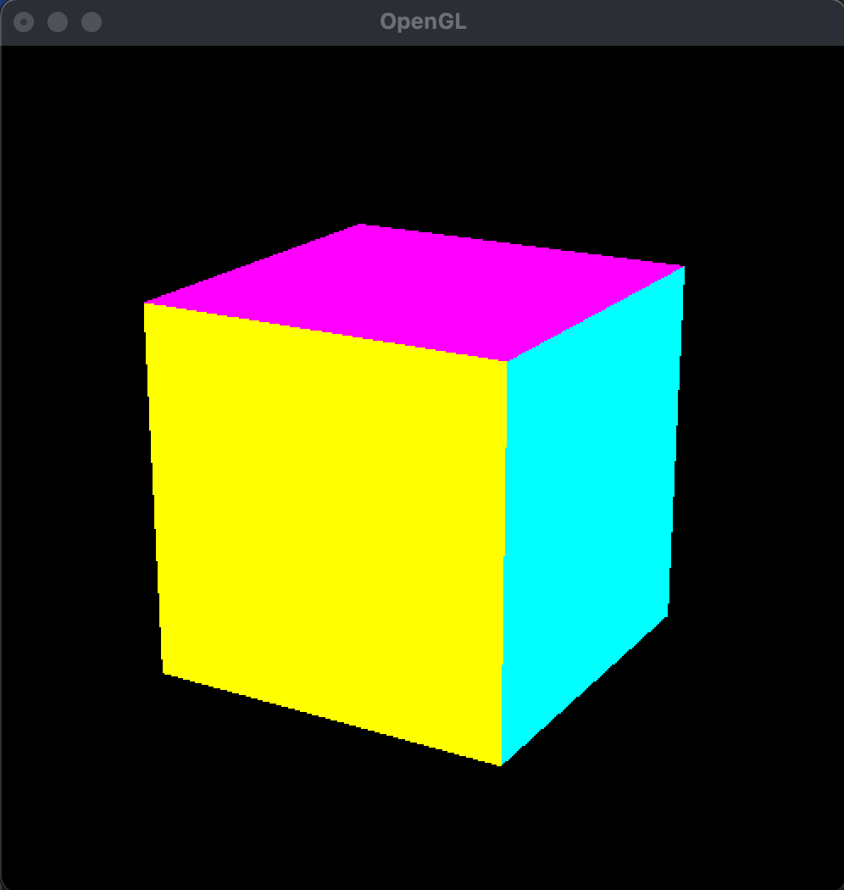
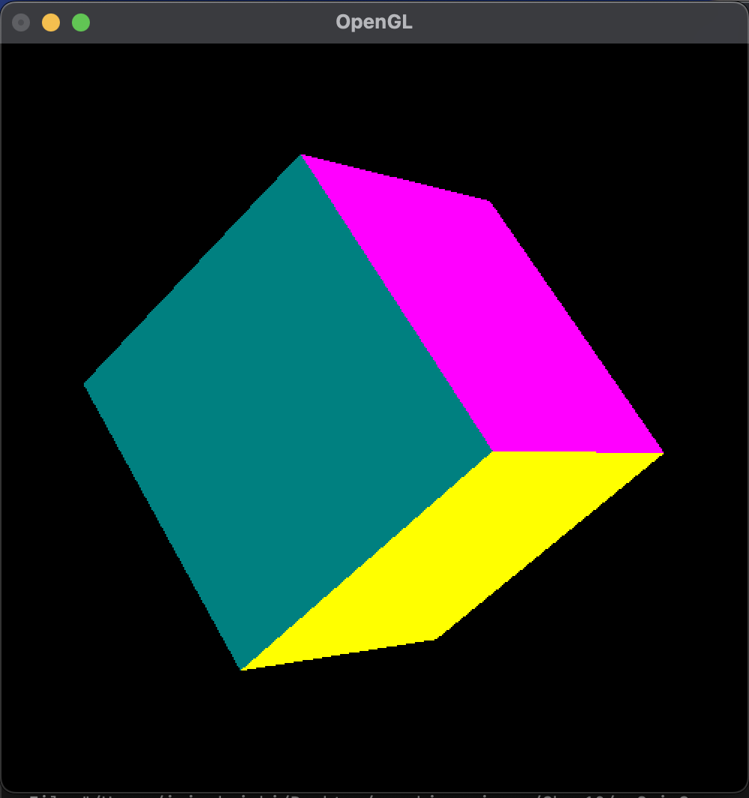
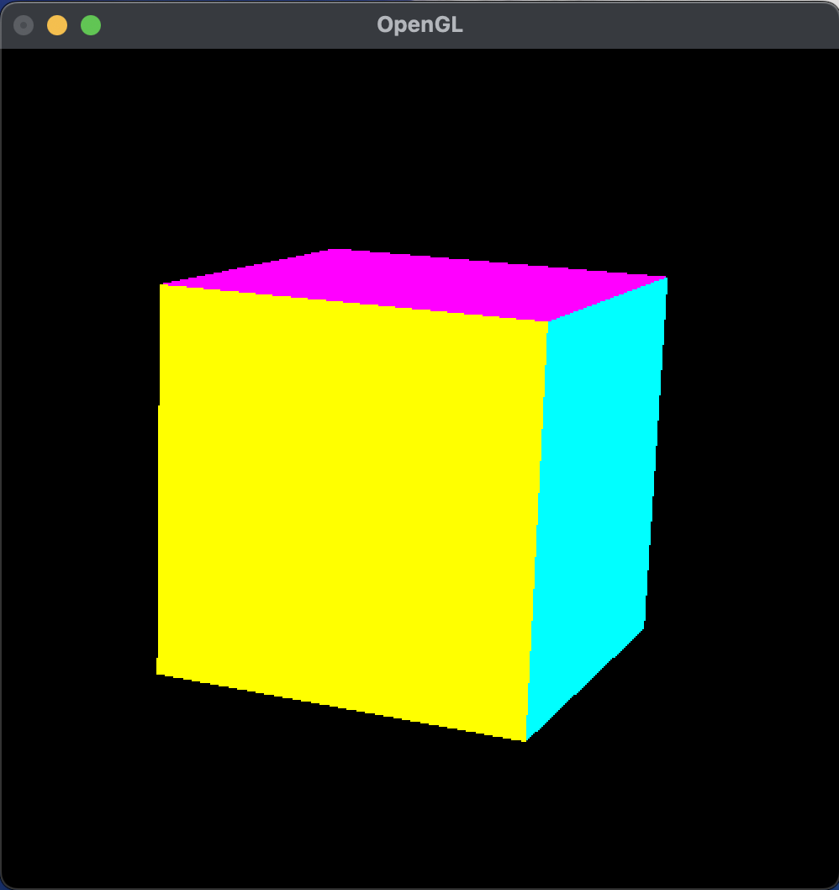
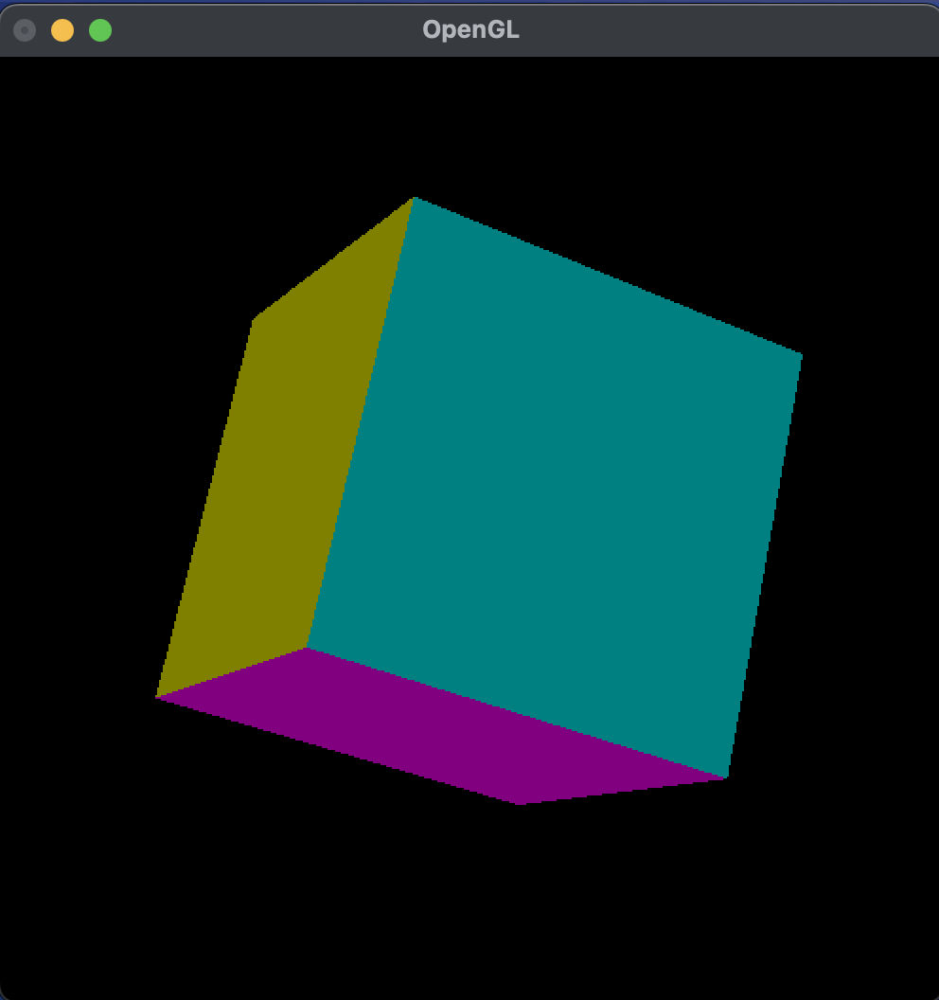

アニメーションとマウス入力 (第 10 回)
| 氏名 | 入佐 啓士
|
|---|
| クラス | 理科 1 類 37 組
|
|---|
| 学生証番号 | J4-220897
|
|---|
□課題10.0 - 13.2節 例 1: 物体の回転プログラム myRotateCanvas.py
○プログラムリスト
(例題のため省略)
○実行コマンド
なし
○実行結果
(文字列の表示なし)
○考察
今回は、MyGLCanvasクラスを継承し、マウス入力に応じて3次元立体を回転・描画するクラスを実装した。
このクラスは11.3節で定義したMyGLCanvas内の立体の姿勢を表現する回転角度であるself.rotX, self.rotYをマウスの移動量に応じて更新し、新しい姿勢の立体を描画することでマウスによる立体の回転を可能にするcanvasである。具体的にはmotionメソッドがマウスカーソル移動時に回転角度を変更するコールバック関数である。
このクラスは立体の描画プログラムとともに使うものなので、その実行結果についての考察は例2で行う。
□課題10.0 - 13.2節 例 2: 立方体の回転プログラム cubeRotate.py
○プログラムリスト
(例題のため省略)
○実行コマンド
$ python cubeRotate.py
○実行結果
(文字列の表示なし)

○考察
今回は立体の回転を可能にするMyRotateCanvasを利用して立方体をマウスによって回転させるプログラムを走らせた。
今までの立方体の描画プログラムと異なるのはcanvasにMyRotateCanvasを使用したことのみで非常に簡単なプログラムであった。
実行結果は画像の通りで、マウスの移動にともなって立方体が簡単に回転できた。ただ立方体の上下がひっくり返った状態では、マウスの左右の動きに対して逆向きに動いた。これは物体に施されたx軸周りの回転によって立体のy軸が傾き、y軸周りの回転であるthetaYが異なる結果をもたらすからだと考えた。
□課題10.0 - 13.2節 例 3: 物体の回転アニメーション mySpinCanvas.py
○プログラムリスト
1 from OpenGL.GL import *
2 from OpenGL.GLU import *
3 from OpenGL.GLUT import *
4 from myGLCanvas import MyGLCanvas
5
6 class MySpinCanvas(MyGLCanvas):
7 def __init__(self):
8 super().__init__()
9 self.x, self.y = self.startX, self.startY = (-1, -1)
10 self.buttondown = -1
11 self.angle = 0
12 self.axisX, self.axisY, self.axisZ = (0, 0, 1)
13
14 def mouse(self, button, state, x, y):
15 if state == GLUT_DOWN:
16 self.buttondown = button
17 self.x, self.y = self.startX, self.startY = (x, y)
18 if state == GLUT_UP:
19 self.buttondown = -1
20 if button == GLUT_LEFT_BUTTON:
21 if self.startX == x and self.startY == y:
22 self.angle = 0
23 glutIdleFunc(None)
24 else:
25 glutIdleFunc(self.idle)
26
27 def motion(self, x, y):
28 deltaX, deltaY = (x-self.x, y-self.y)
29 if self.buttondown == GLUT_LEFT_BUTTON:
30 SPINRATIO = 50
31 self.angle = (deltaX**2 + deltaY**2)**0.5 * SPINRATIO / min(self.width, self.height)
32 modelMatrix = glGetDoublev(GL_MODELVIEW_MATRIX)
33 projMatrix = glGetDoublev(GL_PROJECTION_MATRIX)
34 viewport = glGetIntegerv(GL_VIEWPORT)
35 originX, originY, originZ = gluProject(0, 0, 0, modelMatrix, projMatrix, viewport)
36 self.axisX, self.axisY, self.axisZ = gluUnProject(originX+deltaY, originY+deltaX, originZ, modelMatrix, projMatrix, viewport)
37 self.x, self.y = (x, y)
38 self.idle()
39
40 def positionInit(self):
41 glTranslated(0, 0, self.depth)
42 glRotated(self.rotX, 1, 0, 0)
43 glRotated(self.rotY, 0, 1, 0)
44 glRotated(self.rotZ, 0, 0, 1)
45
46 def idle(self):
47 glRotated(self.angle, self.axisX, self.axisY, self.axisZ)
48 self.display()
49
50 def display(self):
51 self.coreDisplay()
52
53
54 def loop(self):
55 glutReshapeFunc(self.reshape)
56 glutDisplayFunc(self.display)
57 glutMouseFunc(self.mouse)
58 glutMotionFunc(self.motion)
59 glutIdleFunc(None)
60 glutMainLoop()
○実行コマンド
なし
○実行結果
(文字列の表示なし)
○考察
今回は、MyGLCanvasクラスを継承して、マウスで回転操作を行うと継続的に回転を続けるクラスを実装した。
idleメソッドではglRotatedにより回転処理を行い、glutIdleFunc関数によって、一定の経過時間でidleメソッドを起動することができるため継続的に回転を続けることができる。
また、マウスカーソルの移動ベクトルと3次元空間の原点が変換されたスクリーン座標系における位置座標のズレを回転軸の方向ベクトルとすることで、立方体が逆向きの時にマウスの移動と回転方向がずれるという問題は解決された。
次のセクションで実際にこのcanvasを使用して立方体の回転アニメーションを行おうと思う。
□課題10.0 - 13.2節 例 4: 立方体の回転アニメーション cubeSpin.py
○プログラムリスト
(例題のため省略)
○実行コマンド
$ python cubeSpin.py
○実行結果
(文字列の表示なし)


○考察
今回はMySpinCanvasクラスをcanvasとして利用することで継続t系に回転し続ける立方体の回転アニメーションを描画するプログラムを走らせた。
実行結果は一度カーソルを動かしたら継続的に立方体が回転し続けた。またカーソルの移動速度を上げたら立方体が高速に回転し続けた。それは単位時間あたりのカーソルの移動距離が後者の方が大きく、mySpinCanvasの31行目の(deltaX**2 + deltaY**2)**0.5が大きくなったからだと考える。
また、同じカーソルの移動距離でもウィンドウが小さい場合と大きい場合では、小さい場合の方が回転速度が早かった。これは、mySpinCanvasの31行目の分母であるmin(self.width, self.height)の値が小さくなったからだと考える。
このプログラムでは一度立体を動かしたらクリックするまで永遠に回転し続けるのが、SPINRATIOを時間経過により変化させることで回転が減衰するプログラムが作れると思った。次の章末課題では回転速度が減衰するプログラムを作ろうと思う。
□課題10.0 - 章末課題1: 回転速度の変更 cubeSpin2.py mySpinCanvas2.py
○プログラムリスト(mySpinCanvas2.pyのみ)
1 from OpenGL.GL import *
2 from OpenGL.GLU import *
3 from OpenGL.GLUT import *
4 from myGLCanvas import MyGLCanvas
5
6 class MySpinCanvas(MyGLCanvas):
7 def __init__(self):
8 super().__init__()
9 self.x, self.y = self.startX, self.startY = (-1, -1)
10 self.buttondown = -1
11 self.angle = 0
12 self.axisX, self.axisY, self.axisZ = (0, 0, 1)
13 self.spinratio = 50
14 self.deltaX, self.deltaY = (0, 0)
15
16 def mouse(self, button, state, x, y):
17 if state == GLUT_DOWN:
18 self.buttondown = button
19 self.x, self.y = self.startX, self.startY = (x, y)
20 if state == GLUT_UP:
21 self.buttondown = -1
22 if button == GLUT_LEFT_BUTTON:
23 if self.startX == x and self.startY == y:
24 self.angle = 0
25 self.spinratio = 50
26 glutIdleFunc(None)
27 else:
28 glutIdleFunc(self.idle)
29
30 def motion(self, x, y):
31 self.deltaX, self.deltaY = (x-self.x, y-self.y)
32 if self.buttondown == GLUT_LEFT_BUTTON:
33 self.angle = (self.deltaX**2 + self.deltaY**2)**0.5 * self.spinratio / min(self.width, self.height)
34 modelMatrix = glGetDoublev(GL_MODELVIEW_MATRIX)
35 projMatrix = glGetDoublev(GL_PROJECTION_MATRIX)
36 viewport = glGetIntegerv(GL_VIEWPORT)
37 originX, originY, originZ = gluProject(0, 0, 0, modelMatrix, projMatrix, viewport)
38 self.axisX, self.axisY, self.axisZ = gluUnProject(originX+self.deltaY, originY+self.deltaX, originZ, modelMatrix, projMatrix, viewport)
39 self.x, self.y = (x, y)
40 self.idle()
41
42 def positionInit(self):
43 glTranslated(0, 0, self.depth)
44 glRotated(self.rotX, 1, 0, 0)
45 glRotated(self.rotY, 0, 1, 0)
46 glRotated(self.rotZ, 0, 0, 1)
47
48 def idle(self):
49 glRotated(self.angle, self.axisX, self.axisY, self.axisZ)
50 self.spinratio *= 0.99
51 self.angle = (self.deltaX**2 + self.deltaY**2)**0.5 * self.spinratio / min(self.width, self.height)
52 self.display()
53
54 def display(self):
55 self.coreDisplay()
56
57 def loop(self):
58 glutReshapeFunc(self.reshape)
59 glutDisplayFunc(self.display)
60 glutMouseFunc(self.mouse)
61 glutMotionFunc(self.motion)
62 glutIdleFunc(None)
63 glutMainLoop()
○実行コマンド
$ python cubeSpin2.py
○実行結果
(文字列の表示なし)

○考察
今回は、SPINRATIOを動的に調整することで、立方体が回転するに従って速度が減衰するプログラムを走らせた。
プログラムを作成する前、SPINRATIOを動的に小さくしていくためには、MySpinCanvasのインスタンス変数として何回idleメソッドが呼ばれたかを記録しておき、idleメソッドが呼ばれるたびに加算していく。そして減衰率^nをSPINRATIOにかけることでだんだん減衰していくプログラムが書けると考えた。しかし、うまくいかずログを設置して確認するとmotionメソッドはボタンが押されている時しか起動しないため、self.angleはずっと同じままであった。そのため、deltaXとdeltaYをインスタンス変数にして、idleメソッドにangleを変化させるプログラムを追加したところ減衰しながら回転するプログラムが作成できた。
次の課題は一度回転が停止するともう一度回転させることができないということだった。その原因はログを見てみると、立方体をクリックして停止させてもspinratioがリセットされないため、どんどんangleが0に近づき続けるためでした。そのため25行目にspinratioをリセットする処理を追加したところ、この問題は解決でき、期待通りのプログラムとなった。
□課題10.0 - 章末課題2: 回転速度の対話的な調整 cubeSpin3.py mySpinCanvas3.py
○プログラムリスト(mySpinCanvas3.pyのみ)
1 from OpenGL.GL import *
2 from OpenGL.GLU import *
3 from OpenGL.GLUT import *
4 from myGLCanvas import MyGLCanvas
5
6 class MySpinCanvas(MyGLCanvas):
7 def __init__(self):
8 super().__init__()
9 self.x, self.y = self.startX, self.startY = (-1, -1)
10 self.buttondown = -1
11 self.angle = 0
12 self.axisX, self.axisY, self.axisZ = (0, 0, 1)
13 self.spinratio = 50
14 self.deltaX, self.deltaY = (0, 0)
15 self.delay = 0.99
16
17 def mouse(self, button, state, x, y):
18 if state == GLUT_DOWN:
19 self.buttondown = button
20 self.x, self.y = self.startX, self.startY = (x, y)
21 if state == GLUT_UP:
22 self.buttondown = -1
23 if button == GLUT_LEFT_BUTTON or button == GLUT_RIGHT_BUTTON:
24 if self.startX == x and self.startY == y:
25 self.angle = 0
26 self.spinratio = 50
27 glutIdleFunc(None)
28 else:
29 glutIdleFunc(self.idle)
30
31 def motion(self, x, y):
32 self.deltaX, self.deltaY = (x-self.x, y-self.y)
33 if self.buttondown == GLUT_LEFT_BUTTON or self.buttondown == GLUT_RIGHT_BUTTON:
34 if self.buttondown == GLUT_RIGHT_BUTTON:
35 self.delay = 1.01
36 self.angle = (self.deltaX**2 + self.deltaY**2)**0.5 * self.spinratio / min(self.width, self.height)
37 modelMatrix = glGetDoublev(GL_MODELVIEW_MATRIX)
38 projMatrix = glGetDoublev(GL_PROJECTION_MATRIX)
39 viewport = glGetIntegerv(GL_VIEWPORT)
40 originX, originY, originZ = gluProject(0, 0, 0, modelMatrix, projMatrix, viewport)
41 self.axisX, self.axisY, self.axisZ = gluUnProject(originX+self.deltaY, originY+self.deltaX, originZ, modelMatrix, projMatrix, viewport)
42 self.x, self.y = (x, y)
43 self.idle()
44
45
46 def positionInit(self):
47 glTranslated(0, 0, self.depth)
48 glRotated(self.rotX, 1, 0, 0)
49 glRotated(self.rotY, 0, 1, 0)
50 glRotated(self.rotZ, 0, 0, 1)
51
52 def idle(self):
53 glRotated(self.angle, self.axisX, self.axisY, self.axisZ)
54 self.spinratio *= self.delay
55 self.angle = (self.deltaX**2 + self.deltaY**2)**0.5 * self.spinratio / min(self.width, self.height)
56 self.display()
57
58 def display(self):
59 self.coreDisplay()
60
61 def loop(self):
62 glutReshapeFunc(self.reshape)
63 glutDisplayFunc(self.display)
64 glutMouseFunc(self.mouse)
65 glutMotionFunc(self.motion)
66 glutIdleFunc(None)
67 glutMainLoop()
○実行コマンド
$ python cubeSpin3.py
○実行結果
(文字列の表示なし)

○考察
今回は左ボタンで回転させた場合は減衰率0.99で減衰、右ボタンの場合は1.01で加速していくプログラムを走らせた。
まず変更点は、motionメソッドで右クリックの時も発火するために33行目の条件分岐に右クリックを追加し、右クリックの場合減衰率を1.01に変更した。
またmouseメソッドでも23行目のように右クリックの条件分岐を追加した。
実行結果は期待通りで、右クリックの場合は少し動かしただけですぐに加速していった。
□課題や授業に関して
○レポート作成に要した時間
3時間
○特に苦労した点
減衰するプログラムを書くときに一度止めたら2回目以降に動かせなくなるというエラーの解決に時間がかかった。idleメソッドが呼ばれるごとにインスタンス変数の値をログとして出力することで解決の糸口がわかった。
○授業についての感想や希望
アニメーションはずっとやりたい部分だったため楽しく取り組めました。またアニメーションの場合実行結果を画像で伝えにくかったです。